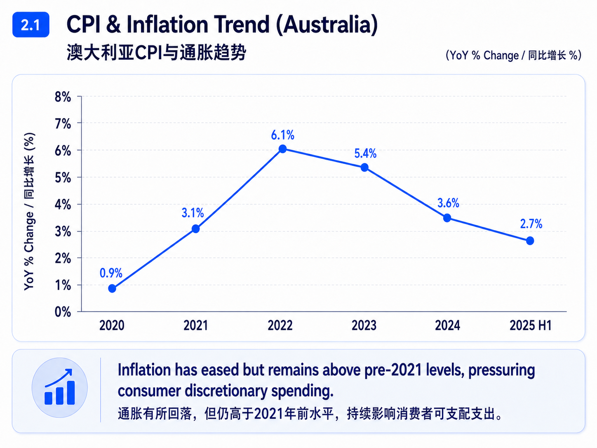
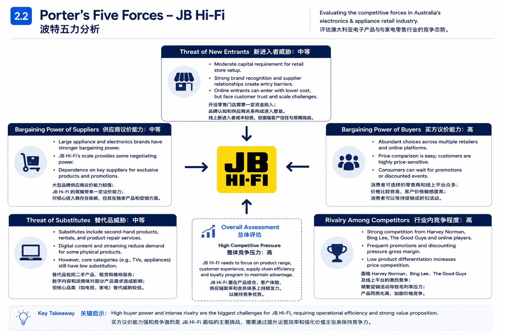
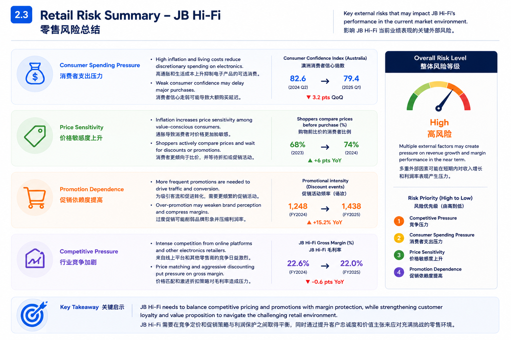
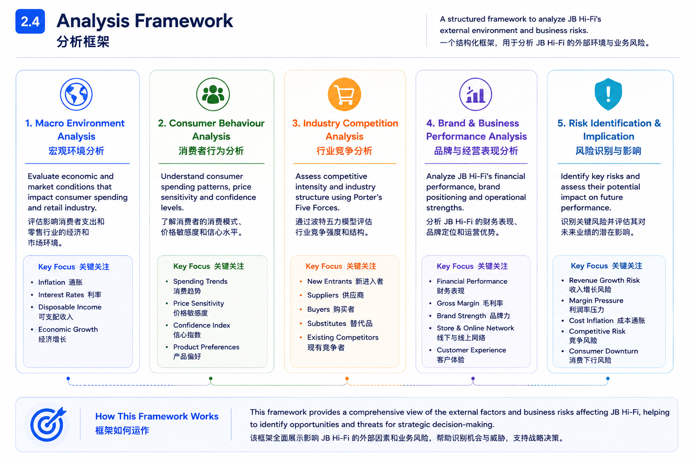

Project Overview
项目概述
-
Analysed how inflation and living cost pressure may reduce discretionary spending on electronics and appliances.
分析通胀和生活成本压力如何影响消费者在电子产品与家电上的可选消费支出。 -
Connected macroeconomic changes with retail pricing, promotion intensity and margin pressure.
将宏观经济变化与零售定价、促销强度和毛利率压力联系起来。
Key Focus
分析重点
- Inflation and consumer spending pressure｜通胀与消费者支出压力
- Price sensitivity and promotion dependence｜价格敏感度与促销依赖
- Industry competition and buyer power｜行业竞争与买方议价能力
- Retail risk and strategic implications｜零售风险与战略影响
Methods
分析方法
- Macroeconomic analysis｜宏观经济分析
- Consumer spending and confidence analysis｜消费者支出与信心分析
- Porter’s Five Forces｜波特五力分析
- Retail risk assessment｜零售风险评估
Preview Materials
预览材料

CPI & Inflation Trend｜CPI 与通胀趋势

Porter’s Five Forces｜波特五力分析

Retail Risk Summary｜零售风险总结

Analysis Framework｜分析框架